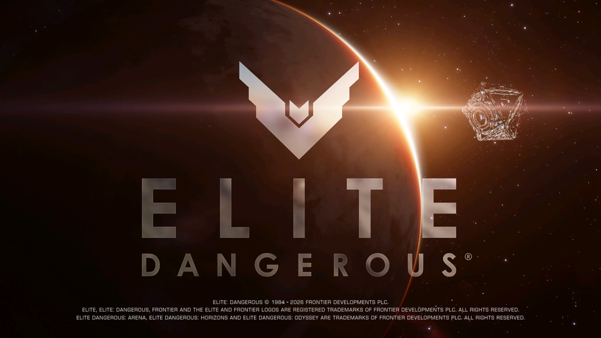
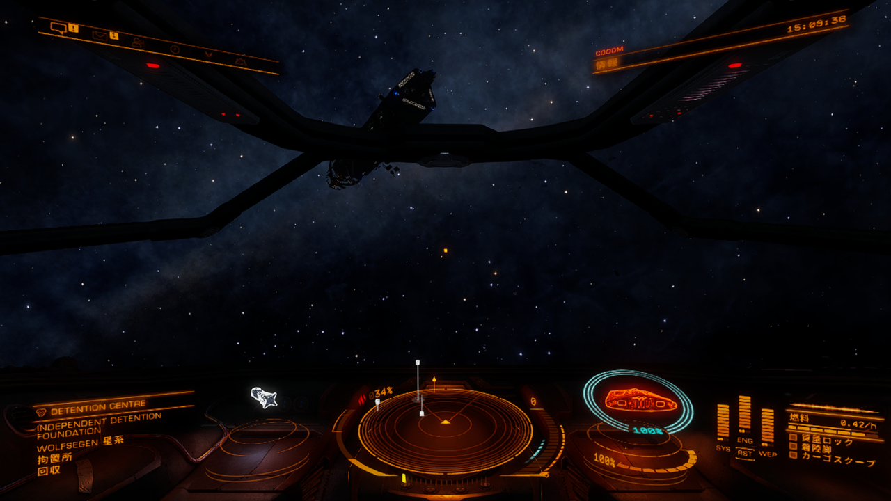
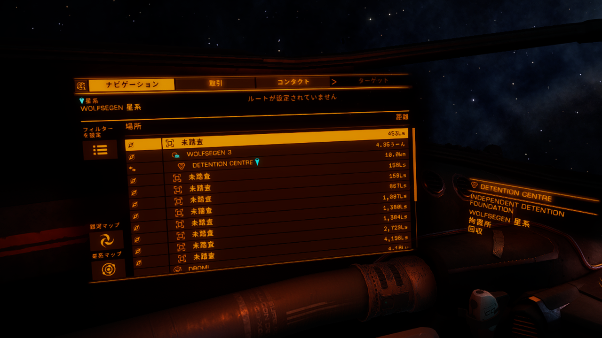
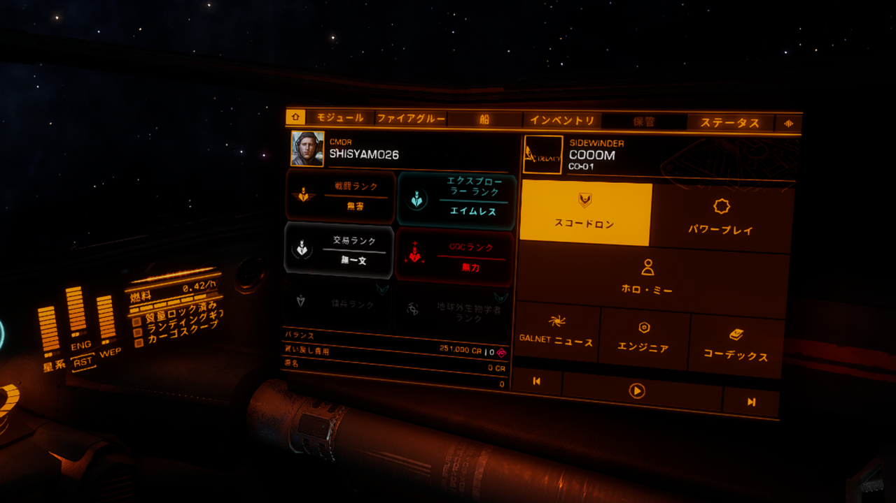
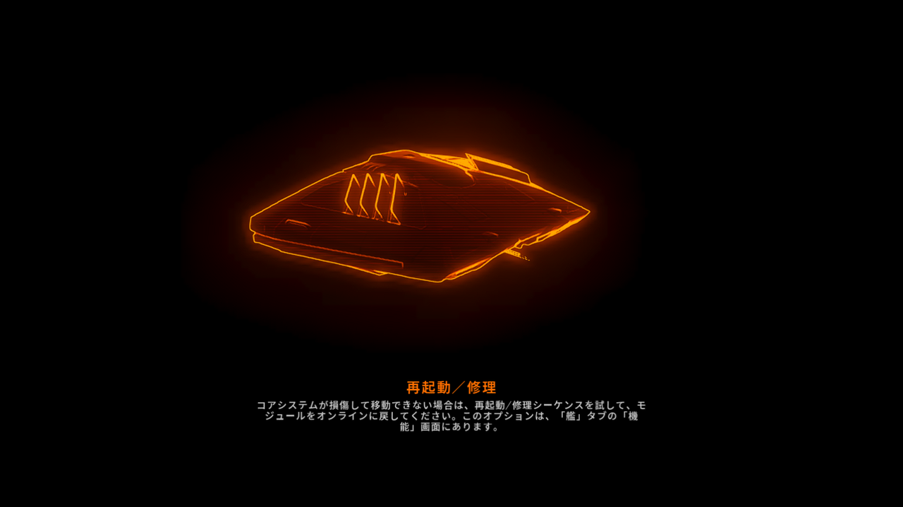
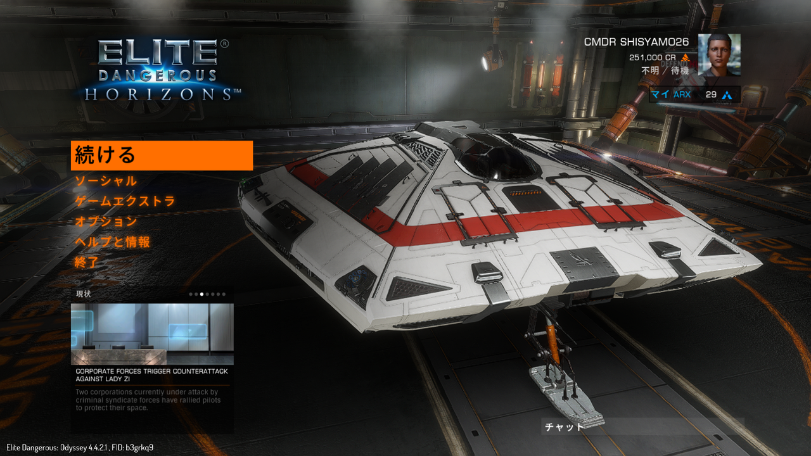

どんなゲーム？
エリート・デンジャラスは、フロンティア・デベロップメンツが開発した宇宙のサンドボックスゲームです。 1984年の名作「Elite」の流れをくむ作品で、実物大の天の川銀河を、自分の艦船で自由に飛び回ります。
交易で稼ぐ、賞金首を追う、未知の星系を探査する、ミッションを請け負って勢力の争いに加わるなど、生き方はコマンダーしだいです。 Horizons では惑星への着陸、Odyssey では船を降りて歩く冒険も加わりました。
Elite Dangerous
Steam 版の「Elite Dangerous」を日本語で遊べるようにする、非公式のファンメイド日本語化パッチです。 メニューや設定の画面、コックピットのパネルと HUD、ステーションのサービス、ミッションの文章、艦船・モジュール・商品の名前と説明、通信、コーデックス、ロード画面のヒントまで、ゲームに入っている文章を日本語にしています。 ゲームのフォルダにファイルをひとつ置くだけで日本語になり、消せば英語に戻ります。
エリート・デンジャラスは、フロンティア・デベロップメンツが開発した宇宙のサンドボックスゲームです。 1984年の名作「Elite」の流れをくむ作品で、実物大の天の川銀河を、自分の艦船で自由に飛び回ります。
交易で稼ぐ、賞金首を追う、未知の星系を探査する、ミッションを請け負って勢力の争いに加わるなど、生き方はコマンダーしだいです。 Horizons では惑星への着陸、Odyssey では船を降りて歩く冒険も加わりました。






EliteDangerous_JP.zip の中の dinput8.dll を、EliteDangerous64.exe があるフォルダに置きます。
Steam のライブラリでゲームを右クリックし、「管理」→「ローカルファイルを閲覧」で開いたフォルダの中の Products\elite-dangerous-odyssey-64 です。ゲームのファイルは書き換えません。
Products\elite-dangerous-odyssey-64 から dinput8.dll を消します。コマンダーのデータはサーバーにあり、日本語化の有無とは関係ありません。
用語は Elite:Dangerous 日本語 Wiki に合わせています。
誤訳や不自然な訳に気づいたら、GitHub の Issues で教えてください。
OFL.txt をご覧ください。